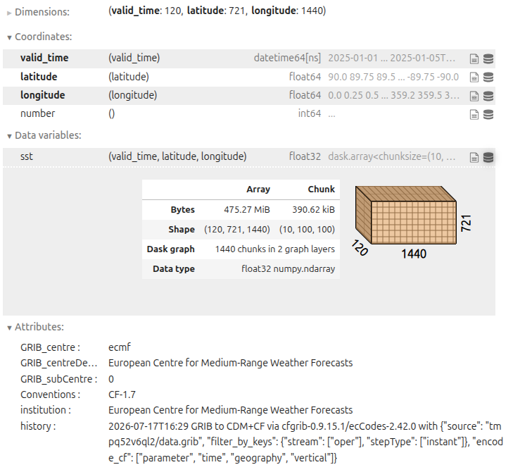

Python for Zarr
Last updated on 2026-08-31 | Edit this page
Overview
Questions
- What Python packages are commonly used to work with Zarr data?
- How can I inspect a Zarr store directly with the
zarrlibrary? - How does xarray represent Zarr datasets as labelled N-dimensional data?
- When is the data actually loaded into memory?
- What basic xarray operations are useful for oceanography, climate, and meteorology?
Objectives
- Import the core Python libraries for working with Zarr data.
- Inspect a Zarr store directly with the
zarrlibrary. - Open a Zarr dataset with xarray and explore variables, dimensions, and coordinates.
- Understand lazy loading and why it matters for large datasets.
- Use a few basic xarray operations on environmental Zarr data.
Python ecosystem for Zarr
Zarr has a rich ecosystem of Python tools:
- zarr - the core Python implementation of Zarr’s chunked N‑dimensional arrays and groups.
-
xarray
- a labelled N‑dimensional array library that can open Zarr datasets and
present them as
Datasetobjects with named dimensions and coordinates. - fsspec / s3fs / gcsfs / obstore - filesystem adapters to access Zarr stores on local disk, S3, Google Cloud Storage, and other backends.
- Supporting tools - Virtualizarr, Icechunk, and others build on Zarr and xarray for specialised workflows (rechunking, transactional storage, cloud‑ready archives).
In this lesson we focus on the essentials: how to use
zarr directly for low-level inspection and how to use
xarray for most day‑to‑day analysis with environmental data in Zarr
format.
Opening with zarr library
As you saw in the previous lesson, Zarr stores are organised into
groups and arrays. The zarr library provides low-level
access to these stores, allowing you to open groups and arrays, inspect
their shapes, chunk shapes, data types, read and write data, and view or
edit attributes (metadata).
On the data directory, we have a Zarr store called
data/era5_sst/ocean_temperature.zarr. This store contains a
single group with one array, representing sea surface temperature data
from the ERA5 reanalysis dataset. The array is chunked in time and
space, and has metadata attributes such as units and long names.
We can open the Zarr store
data/era5_sst/ocean_temperature.zarr using the
zarr library:
PYTHON
import zarr
base_path = "/gws/ssde/j25b/atlantis_vis/cloud-native-geoscience-course/" # or "" if you have the data in your current working directory
root = zarr.open_group(f"{base_path}data/era5_sst/ocean_temperature.zarr", mode="r")
print(root)
print(list(root.arrays()))
print(list(root.groups()))
print("Group attributes:", root.attrs)You can then inspect one array directly:
PYTHON
temp = root["sst"]
print(temp)
print("Shape:", temp.shape)
print("Chunks:", temp.chunks)
print("Data type:", temp.dtype)
print("Array attributes:", temp.attrs)A Zarr array tells you how the data are organised on disk or in
object storage. Its shape tells you the full size of the
array, chunks tells you how it is split up, and
attrs can store useful metadata such as units or variable
names.
Exercise 1 - Explore the store
Using the example Zarr store
(data/era5_sst/ocean_temperature.zarr):
- List all arrays in the root group.
- Choose one data variable and print its
shape,chunks, anddtype. - Inspect the array attributes and identify at least three useful metadata fields.
Questions:
- What dimensions do you think the
shaperepresents? - How does
chunksdivide the data? - Which attributes look useful for analysis?
Each array has a fixed shape and chunk layout, and that metadata provides context such as units, long names, and standard names:
Lazy loading and memory
Opening a Zarr store usually reads metadata first, not the full data values. This is often called lazy loading: the dataset structure is available immediately, but the chunk data are only read when you ask for values.
With zarr, properties such as shape,
chunks, dtype, and .attrs come
from metadata. The actual data are read when you index or slice the
array.
At that point, Zarr reads only the chunks needed for that selection. It does not need to load the full array unless you request the full array.
The same idea applies with xarray: opening the dataset is cheap, and data are loaded only when you select, compute, plot, or ask for values.
Opening with xarray
While zarr is ideal for low-level inspection and
manipulation, xarray is usually the main tool for analysing
multidimensional environmental data. It provides:
- Datasets - collections of data variables (arrays) with shared dimensions and coordinates.
-
Labelled dimensions - names like
time,lat,lon,depthinstead of numeric indices. - Coordinates - explicit arrays for latitude, longitude, time, etc.
-
High-level operations - selection
(
.sel), reduction (.mean,.sum), resampling, plotting, etc.
xarray can open NetCDF, GRIB (via backends), and Zarr data. Because of this, it makes Zarr datasets accessible in a familiar, analysis-ready format. And it also makes it really easy to update workflows to use cloud-native Zarr stores without changing the analysis code.
For Zarr it uses xr.open_zarr, which understands the
Zarr metadata and conventions. Basic usage:
PYTHON
import xarray as xr
ds = xr.open_zarr(f"{base_path}data/era5_sst/ocean_temperature.zarr")
ds # Overview of variables and coordinatesTo see the dimensions, data variables, and coordinates:
PYTHON
print("Dimensions: ", ds.dims) # Dimensions
print("Data variables: ", ds.data_vars) # Data variables
print("Coordinates: ", ds.coords) # Coordinate variablesImportant points:
-
dsis an xarrayDataset. -
ds.data_varslists data variables (e.g.sst,salinity). -
ds.coordstypically includestime,lat,lon, and any other coordinate variables. - Metadata from Zarr arrays and attributes is mapped into xarray’s structure so that CF conventions and other patterns can be used.
The result is an xarray Dataset. Each variable is an
xarray DataArray, and the metadata from the Zarr store is
carried into the xarray structure.

Exercise 2 - Open with xarray
Using the same dataset:
- Open it with
xr.open_zarr. - Print
ds.dims,ds.data_vars, andds.coords. - Inspect one variable and print its dimensions and attributes.
- Note whether the dataset opens quickly even if it is large.
Questions:
- Which variables are data variables versus coordinates?
- Which dimensions are present?
- What does xarray tell you about the dataset without loading all the values?
PYTHON
import xarray as xr
ds = xr.open_zarr(f"{base_path}data/era5_sst/ocean_temperature.zarr")
print(ds.dims)
print(ds.data_vars)
print(ds.coords)Xarray organises the dataset into named dimensions and separates data variables from coordinate variables, which makes the structure easier to understand. Opening the dataset is fast because xarray reads metadata first and loads data only when needed.
NetCDF vs Zarr with xarray
If we open the same dataset in NetCDF format, we can use
xr.open_dataset:
PYTHON
ds_netcdf = xr.open_dataset(f"{base_path}data/era5_sst/ocean_temperature.nc")
print(ds_netcdf)You will see that the structure is very similar to the Zarr version. The main difference is that NetCDF is a single file, while Zarr is a directory of chunked arrays. But xarray provides a consistent interface for both formats, so analysis code can be reused.
Basic Xarray Operations
In oceanography, climate, and meteorology, we often want to select data by coordinates, compute means over dimensions, and plot results. Xarray provides a simple interface for these operations:
- Select data with
.sel()using coordinate values. - Use
.isel()when you want numeric positions. - Compute a mean over one or more dimensions
(e.g.
.mean(dim=("latitude", "longitude"))). And remember that longitude is usually 0-360 in ERA5. - Plot a slice quickly with
.plot().
PYTHON
time_slice = ds["sst"].sel(valid_time=slice("2025-01-01T00:00:00", "2025-01-02T00:00:00"))
global_mean = ds["sst"].mean(dim=("latitude", "longitude"))
point_ts = ds["sst"].sel(latitude=0.0, longitude=0.0, method="nearest")
isel_slice = ds["sst"].isel(valid_time=0, latitude=200, longitude=200)In the operations above, the data is not loaded into memory until you request values or plot the results. For example, the following code will trigger data loading and plotting:
These operations are especially useful for environmental data, because they keep the code readable and let you work with named coordinates rather than raw array positions.
What comes into memory?
A useful rule of thumb is:
- Opening a Zarr store loads metadata.
-
Inspecting
shape,chunks,dims, and attributes mostly uses metadata. -
Selecting, computing,
plotting, or calling
.valuesreads data chunks into memory.
For example, this mainly inspects metadata:
But this requests actual data values:
This distinction is one of the main reasons Zarr works well for large environmental datasets: you can explore the dataset structure first, and only load the parts you need for analysis.
Exercise 3 - First analysis on a Zarr dataset
Using the data/era5_sst/ocean_temperature.zarr dataset
and xarray:
- Inspect the available variables and pick the sea surface temperature.
- Compute a spatial mean over latitude and longitude and inspect the resulting time series.
- Select a small spatial region (e.g. a box around a particular ocean
basin) and compute a mean for that region. Remember that you have to use
max_latbeforemin_latinslice()because latitude decreases from north to south. And remember that longitude is usually 0-360 in ERA5.
Questions:
- How does xarray’s interface make these operations readable compared to direct array indexing?
- What would change if the dataset were too large to fit in memory (you’ll explore this in later lessons with Dask and cloud‑native formats)?
- How comfortable do you feel with xarray’s basic usage now?
PYTHON
import xarray as xr
ds = xr.open_zarr(f"{base_path}data/era5_sst/ocean_temperature.zarr")
sst = ds["sst"]
# Global mean time series
global_ts = sst.mean(dim=("latitude", "longitude"))
print(global_ts)
# Regional mean (example box)
regional_ts = sst.sel(latitude=slice(0, -30), longitude=slice(300, 360)).mean(dim=("latitude", "longitude"))
print(regional_ts)
# Additional plotting if desired
regional_ts.plot()Xarray’s labelled dimensions and high‑level methods
(.mean, .sel, .plot) make common
operations much more expressive and less error‑prone than raw array
indexing. Opening Zarr datasets with xarray offers a consistent
interface across storage formats, laying the groundwork for later
lessons on performance, chunking, and cloud‑native workflows.
Exercise 3 - Read only a small part
Use xarray to open the Zarr dataset, then select only a small part of it. Select temperature data for the first hour of 2025, for a small region in the Brazilian Southest Coast (min lat: -30, max lat: -20, min lon: -50, max lon: -40). Compute the mean of that subset.
Questions:
- Did you need to load the full dataset?
- What parts were actually read into memory?
- Why is this useful for large datasets?
- What would be the comparison if you had to load a NetCDF file instead?
PYTHON
import xarray as xr
ds = xr.open_zarr(f"{base_path}data/era5_sst/ocean_temperature.zarr")
sst = ds["sst"]
subset = sst.sel(valid_time="2025-01-01T00:00:00", latitude=slice(-20, -30), longitude=slice(310, 320)) # Note: longitude is 0-360 in ERA5, so -50 to -40 becomes 310 to 320
print(subset)
print(subset.mean().values)We can open a huge dataset and still process only a small portion of it. This is one of the main advantages of Zarr and xarray for large environmental data.
- The zarr Python package provides low-level access to Zarr stores, including groups, arrays, and attributes.
- xarray is the main high-level tool for working with environmental Zarr datasets as labelled N-dimensional data.
- Opening Zarr with xarray (
xr.open_zarr) gives you variables, dimensions, and coordinates in a familiarDatasetstructure. - Data values are loaded only when they are selected or used in a computation.
- Basic xarray operations such as selection, reduction, and plotting work the same on Zarr data as on NetCDF data.